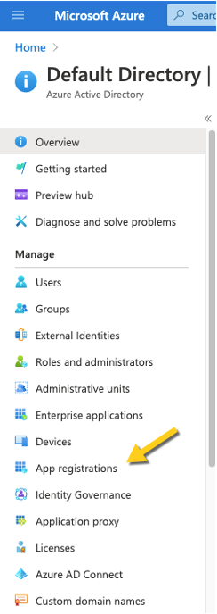
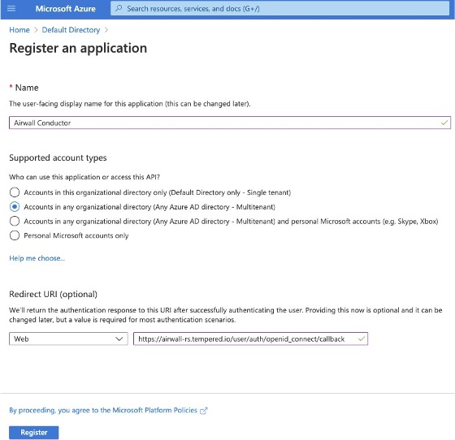
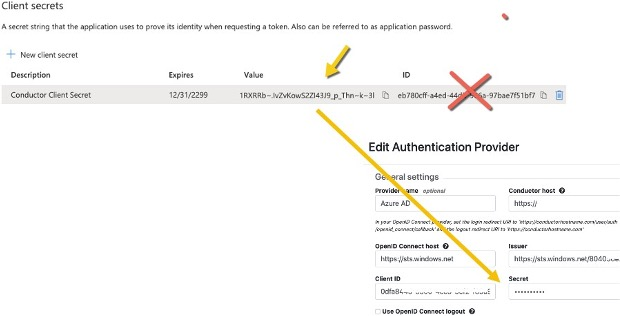
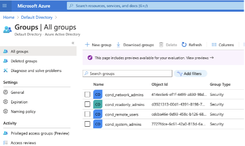
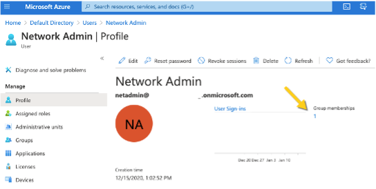

Integrate Third-party Authentication with OpenID Connect
You can integrate a third-party authentication provider with person authentication in the Conductor using OpenID Connect (OIDC). If your users are already configured for single sign-on (SSO) with a third party, or if you have a large number of users, this integration streamlines your user management.
User Roles
In the Airwall Conductor, you configure person roles in OIDC by including them in groups. The OIDC group names are pre-configured in the Conductor, so when you make a person a member of one of the OIDC groups in the OIDC provider, they are automatically given that role in the Conductor. For instance, you can declare that all members of the OIDC provider’s cond_system_admins group are system administrators in the Conductor, and that members of the OIDC cond_remote_users group are remote-access users.
Multi-factor Authentication
If your OIDC provider supports a multi-factor authentication (MFA) protocols, you can use MFA on your provider to require MFA for logging into your Conductor or for Airwall Agent session authentication.
Integrate Authentication with the Conductor
To successfully integrate authentication, you must
- Create and configure an application in your authentication provider.
- Configure OIDC on the Conductor.
- Set up Airwall Agents.
- Verify third-party authentication is working
Since each provider is different, refer to the basics required here, and then the Provider-specific instructions that follow for integrating with some popular providers that support OIDC.
1. Create and configure an application in your authentication provider
Create and configure the application in your provider using the Provider-specific Instructions before connecting it to the Airwall Conductor. Each provider’s workflow is different, but here are the general steps:
- Create an OpenID Connect application.
-
Configure it with the following information:
Field Enter Name Whatever you want. For example, “Airwall Conductor” Login Redirect URI Your Conductor URI followed by /user/auth/openid_connect/callback. For example: https://conductor.mycompany.com/user/auth/openid_connect/callback.
Note – If your Conductor is HA paired, add a second login redirect URI, with the same path added.
Logout Redirect URI Your Conductor URI: https://conductor.mycompany.com - Depending on your provider, set the authentication method to basic, or indicate you are using an authorization code for authentication (not a refresh token).
- Allow the groups claim for grant. The groups claim is what allows the Conductor to match a user’s group with what role they are given. Because groups is not a default OIDC claim, it must be turned on in the provider. For more details, see the Provider-specific instructions.
- Create four groups: cond_system_admins, cond_readonly_admins, cond_network_admins, and cond_remote_users to indicate the four different Conductor roles.
- Add users to each group so they are assigned the correct role when logging into Conductor.
- Give your users access to the application you created in your provider.
- If you want to require MFA to log in, set it up in the OIDC provider. Generally MFA is associated with the app. Please consult your provider documentation for detailed instructions on setting up MFA.
2. Configure OIDC on the Airwall Conductor
- Go to Conductor Settings.
- Next to Authentication, select Add provider.
- Select OpenID Connect and then select Next.
-
On the Add Authentication Provider page, under
General settings, configure the Provider settings as
follows (see the Provider-specific
Instructions for help in finding this information):
For this Setting Enter Provider Name Give your provider a descriptive name. This name appears as an option when logging into the Conductor. Conductor host Host of your Conductor. Must be in the format https://conductor.mycompany.com (no trailing slash) OpenID Connect host Must be in the format https://hostname.com:{optional port} Issuer Issuer provided by your OIDC provider. Sometimes this value is the same as the OpenID Connect host depending on the provider. Client ID (sometimes called Identifier) Token provided by your OIDC provider associated with the provider application Secret Secret token that goes with the Client ID - For HA-paired Conductor host, enter the Host of your HA Conductor (if applicable).
-
Configure the Group settings as follows, and then click
Next:
For this Setting Enter Use groups to manage roles Checked System admin groups Comma-separated list of groups from your provider that will give your user this role. Read-only admin groups Comma-separated list of groups from your provider that will give your user this role. Network admin groups Comma-separated list of groups from your provider that will give your user this role. Remote-access user groups Comma-separated list of groups from your provider that will give your user this role. Note: If users are in groups that match more than one of the roles, they are given the highest level of access possible (system admin, read-only admin, network admin, then remote-access user). - Configure any Group filters you want, and click Finish.
- If you have non-public DNS servers configured in the Conductor under Global Airwall Agent/client settings, your users won’t be able to reach the public addresses on their devices that include the OpenID Connect providers. You may need to configure DNS servers on the Conductor to add your OpenID Connect provider’s DNS server.
- After changing OIDC configuration, you need to log out and log back in to the Conductor to restart it. When you log back in, you can now choose your third-party authentication provider.
3. Set up the Airwall Agents
Any Airwall Agents authenticating using your third-party provider also need to be set up:
- Provision and License Airwall Edge Services in the Conductor.
- Go to the Overlays page, scroll down to People, and click Update, and add the Airwall Agent as a member.
-
Also check that:
- Airwall Agents are included in your Airwall Relay rules.
- Airwall Agent devices have been added to the appropriate Overlays, and you’ve set device trust on the Overlays as needed.
Require third-party authentication
You can also require users to authenticate using the third-party provider either individually or as a group (in 2.2.3 and later Conductors). On the agent's Airwall Agent tab, or on a People Group Properties tab:
- Check the Require authenticated Airwall session box.
- Under Provider, choose the third-party authentication provider you created.
Provider-specific Instructions
Here are specific instructions for a few of the common third-party authentication providers. Note your provider’s documentation may be more up-to-date.
Okta - Create Application and Set Up Group Claims
Create an Application
- In Okta, go to Applications.
- Select Add Application.
- Under Create New Application, select Web.
- Set Allowed grant type to Authorization code.
- Set the OpenID Connect host to the same value as the Issuer in Conductor. This value is found on the under OpenID Connect ID Token on the Sign on tab.
- Note the Client ID and Secret that are in your application, on the General tab under Client Credentials.
- Set up Groups Claim (see below).
Set up Groups Claim
To set up Okta to allow the groups claim in OpenID Connect, use the Classic UI.
- In Okta Authentication, go to Security, and select API.
- From the Authorization Servers tab, open the default API (or whatever API you are assigning to your application).
-
On the Scopes tab:
- Add a scope named groups.
- Uncheck Set as Default.
- Check Include in Public Metadata.
-
On the Claims tab:
- Add a claim named groups.
- Set Include in token type to ID Token / Always
- Set Value type to Groups
- Set a filter of Matches regex to .*. Alternatively, set a filter of Starts with and set to the prefix for your group names that you want to use in Conductor. For example, set Starts with to cond_.
- Set Include in to Any scope.
OneLogin - Create Application
- In OneLogin, select Add App, and then choose OpenID Connect (OIDC).
- Set Authentication method to basic.
-
Add users to the roles you want. For example, to make them a system admin, add
them to cond_sysadmins.
Note: In OneLogin, roles are mapped to OIDC groups (groups mean something else), so add users to roles, not groups.
- In your OneLogin application, on the Parameters tab, configure the roles-to-groups mapping. Edit the groups and modify the default on the Roles field to: User roles, --No transform—.
-
Note the information you’ll need to configure the Conductor:
- OpenID Connect host: This is your OneLogin login URL, for example, https://my-company.onelogin.com.
- Issuer: On the SSO tab, select OpenID Provider Configuration Information for the Issuer.
- Client ID and Secret: These are both on the SSO tab.
Auth0 - Create Application
- In Auth0, under Applications, select Create Application, and then Regular Web Application.
- Skip the quick start.
-
On your new application's Settings page:
-
Add the rule required by Auth0 to set OIDC groups. (In Auth0, roles map to
groups on the Conductor.)
- Following Auth0 instructions, add roles to users that give them the proper role in the Conductor.
Azure Active Directory - Create Application
Note that the Azure AD documentation may be more up-to-date and the settings in your Azure AD account may vary.
-
In Azure Active Directory (AD), select App
registrations.

-
Select New Registration, and fill in the form as
follows:
- Name – Enter a name for the Application (for example, "Airwall Conductor").
- Supported account types – Select Accounts in any organizational directory (Any Azure AD directory – multitenant).
- Redirect URI – Select Web, and then enter the URL of your
Conductor followed by
/user/auth/openid_connect/callback:
-
Click Register. Take a note of the Application (client)
ID and the Directory (tenant) ID provided by Azure AD.
Once you’ve registered the Application, Azure AD provides a set of IDs that you configure in the Conductor when you set up Azure AD as an OIDC provider. Here is how they map to the Edit Authentication Provider options in the Conductor:

- Application (client) ID – Enter in the Client ID box.
- Directory (tenant) ID – Append this ID to
https://sts.windows.net/and enter in the Issuer box .
-
In Azure AD, create a Client Secret:
-
On the Client secrets page, copy the
Value (not the ID). Enter the Value as the secret in
the Conductor.

- From the newly registered application in Azure AD, select Authentication.
-
Under Implicit grant, verify that ID
tokens is checked.
-
In the Azure AD application, set up the groups claim:
-
In Azure AD, create the groups you want to use for the Conductor. Here are some
suggested groups:
- cond_network_admins
- cond_readonly_admins
- cond_remote_users
- cond_system_admins

-
Add users to Azure AD, and assign them to the appropriate groups for Conductor
access:

Verify third-party authentication is working
To verify your configuration:
- Log out of the Conductor.
- Open an incognito window and log in, choosing the provider name you chose in the Conductor.
- Log in as a user you’ve set up with third-party provider. You should be able to log in to the Conductor using your third-party provider credentials.
To verify a client can connect:
- After the client logs in using the third-party provider, ping the client.
Troubleshooting Third-party Authentication User Login
If user login is failing with “Could not find that username/password combination,” usually the integration between the Conductor and OpenID Connect (OIDC) provider is working, but something about group membership is not correctly configured. Use these suggestions to troubleshoot what the issue is.
Check Conductor and OIDC provider group settings
- On the Conductor, go to .
- Select .
-
Select Next, and confirm that Group
settings on the second page are filled out.

- In your OIDC provider, confirm that the groups you have chosen for each role have been created.
- Confirm that the user that is trying to log in is a member of one of the groups that will give them a role on the Conductor. For example, if this user should be a Read-only admin then they should be in the “cond_viewers” group in the OIDC provider.
Follow the Log
- Under , if you are logging at warn or error levels, change logging to at least info.
- Go to .
-
Enter the command:
log follow. You should now see Conductor logs in the virtual terminal. - Have the user attempt to log in again with OIDC. If this is you, do not log out of the Airshell terminal – use a private browser window.
-
When the user completes login, there should be a log message for the user
attempting to login such as
1Mar 11 20:57:34 kibbles SCMP[30051]: OpenID user 'google-oauth2|115620360600894761234' allowed groups: ["cond_netadmins"] - If the allowed groups is empty, the optional “groups” claim may not be correctly configured on the OIDC provider. Please refer to the specific documentation for your OIDC provider to allow the Conductor to receive the “groups” claim.
-
If there are allowed groups but none apply to a Conductor role are there three possible problems:
- The user is not a member of the group you expected
- The groups are being filtered by the OIDC provider. Please check your OIDC provider configuration.
- The groups are being filtered by the Conductor configuration. Check the configuration for your OIDC provider. The Conductor does attempt to prevent you from creating a filter that would invalidate groups assigned for roles.